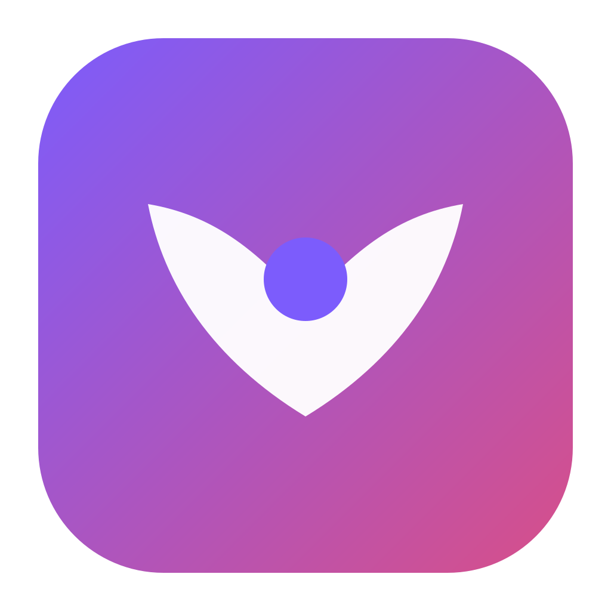
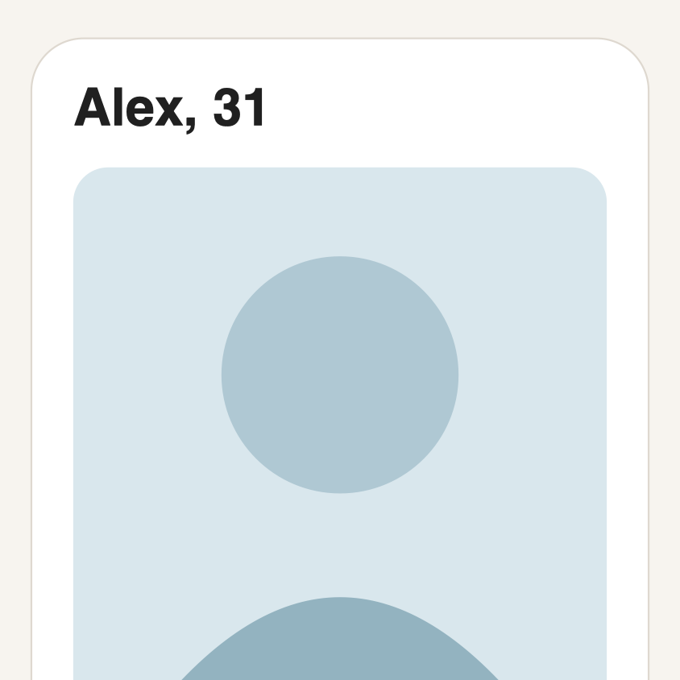

i'm the founder. i designed an agent that works the dating apps for you, inside your own phone screen, and never sends a word without you.
stage: working build, unfinished interface. this page shows how it works, not how it looks.

// Your visual taste is most of every decision. What you wrote in the // brief counts, but it can never outvote what you actually chose. if let visualScore { score = min(1, max(0, visualScore * 0.8 + preference.score * 0.2))1 } else { // A neutral 0.5 for someone whose preferences could not be checked is a // real reading; the same 0.5 for someone who set none is not. score = softPreferences.isEmpty ? nil : preference.score2 }
1taste is 80% of every autonomous decision 2no data stays "no data", never a fake middle score · excerpt from the repo, comments shortened
why it's built this way: what you actually swipe on is evidence, what you write in a brief is a guess about yourself. and a fake 0.5 would let the agent act on nothing.
Dating apps are a second job. The deciding part takes seconds; the swiping, reading, opening lines and finding a Thursday that works take hours. So the pitch was short: an agent that does the labor, while you stay the one who decides.
Winged Max is a macOS app that mirrors your iPhone on your Mac and operates the dating apps inside that window. No scraping, no fake account. It's your Hinge, on your phone, under your account, driven by something that learned what you like, where you can watch it work.
Winged Max doesn't have a finished visual system yet. Its real design system is a handful of numbers, each one a decision about how much the agent may do on your behalf.
taste vs. stated preferences
what you chose outweighs what you said you'd choose
rating half-life
taste moves; the model tracks who you are now
weight of a correction
overruling the agent is the most informative thing you do
to unlock autopilot
it has to predict ratings it never saw, beyond a coin flip
unattended actions, default
a bad night stays small
auto-like · auto-pass
the agent acts only when it's sure; the middle stays yours
messages sent without you
a wrong like costs nothing; a wrong message costs trust
ratings, reasons, taste model
your taste stays yours: it never leaves the machine
weight = max(0.5age/120, 0.15) × (corrected ? 3 : 1)
Old ratings fade but never vanish: the early corpus is the only evidence of long-standing taste. Drawn from RatingWeightPolicy.swift, axis from zero.
An agent that sees who you find attractive and writes as you has to earn trust mechanically, not with copy. Three rules, each one enforced in code: the human confirms anything consequential, autonomy is earned and revocable, and your taste stays yours.

one profile through the agent · the profile is the synthetic test fixture, not a real person
It works inside your real app, where you can watch.
Winged Max drives Apple's iPhone Mirroring, so the agent sees and taps the same window you would. That was a product choice as much as a technical one. Only one step leaves the Mac: reading facts off a profile screenshot. I documented exactly what leaves and what doesn't.
Mirroring needs macOS 15 and isn't available in the EU, so availability, not capture, was the real constraint.
supervised
every like, pass and message is yours
training
rate profiles; each rating refits the model
validated
≥ 50 out-of-fold predictions, AUC > 0.6
bounded autopilot
auto-like ≥ 0.72 · auto-pass ≤ 0.35 · 25 a day
revoked
model invalid: back to supervised, and the app says so
live recreation of the autonomy ladder · states and thresholds from the repo, values illustrative
Autonomy is a ladder, not a toggle.
The agent starts with no permission at all. After enough ratings a small model is fitted on the Mac, and it only unlocks auto-like and auto-pass if it predicts choices it was never shown better than chance. Even then it acts only at the confident ends, under a daily cap. If the model goes invalid, autopilot is taken away.
public var unlocksAgent: Bool { validationCount >= 50 && auc > 0.6 }
AttractionClassifier.swift · every rating contributes one prediction from a model that never saw it
why out-of-fold: a model graded on profiles it trained on can pass by memorising you. grading it only on ones it never saw is the honest test, and a toggle would skip the test entirely.
/// A correction is the user deliberately overruling the agent, /// which is the most informative thing they ever do. And taste /// moves, so a rating from months ago describes who they were, /// not who they are. public func weight(ageDays: Double, corrected: Bool) -> Double { let decayed = pow(0.5, age / halfLifeDays)1 let recency = max(decayed, minimumWeight)2 return recency * (corrected ? correctionMultiplier : 1)3 }
1120-day half-life 2floor 0.15 3a correction counts three times
Training refits on every rating, and listens hardest to corrections.
Watch mode ("Learn while I browse") turns a habit you already have into training. You browse Hinge as usual; Winged captures each profile as you scroll and asks three short questions: your visual reaction, like or pass, and a reason.
I separated "not my type" from "wrong life plans", so passing on someone who doesn't want kids never teaches the model you don't find them attractive.
why a half-life with a floor, not a cutoff: a hard window would forget your long-standing taste the day it turned old. the floor keeps the early ratings as a quiet vote.
/// Skipping removes an item. Approval is NOT delivery: the old `.sent` /// spelling is retained for source compatibility but always fails closed. private func resolveLocked(_ id: UUID, decision: DraftApprovalDecision) throws { guard case .skipped = decision else { throw DraftDeliveryError.deliveryVerificationRequired1 } ... }
1until delivery can be proved, "send" is an error, not an action · excerpt, body shortened
Drafts are review-first. Sending fails closed.
The agent writes in your voice. Three style answers (emoji, formality, reply length) are enforced on every draft, and writing samples or a consent-gated scan of your own past messages teach the rest. But in the build I audited, no message could leave the machine: approving a draft is not sending it, and the code refuses to pretend otherwise.
why it fails closed: until delivery can be proved, an agent that says "sent" might be lying to you. an error is honest; a fake success isn't.
Winged Max works inside your phone screen. The Winged agent before it worked through plain SMS, and those texts have a real path: a carrier, a provider, a webhook, a model that picks one action and writes one reply, and a delivery receipt. This is that path, from the backend repo.
your phone
you text the Winged number: "call me now"
carrier
plain SMS to a US or an EU long number, picked by +1 prefix
Twilio
the provider; turns the SMS into an HTTP POST
webhook
signature checked, STOP caught, date relay tried first
the agent
routes to one of five agents; GPT-4o picks a tool and writes the reply
outbound
messages.create, from the number matched to the recipient
their phone
the reply lands; on a date, the other person's phone
one text through the real pipeline · endpoints, function names and states from the repo · no numbers or keys shown
// Twilio POSTs here. Check the signature before anything else. router.post('/twilio-sms-webhook', validateTwilioSignature,1 consumeWingedMaxPhoneProof, inboundDispatch, preOnboardingController.handleTwilioSmsWebhook); const { From, To, Body, MessageSid } = req.body; const phoneNumber = From.replace(/^whatsapp:/, '');2 if (!E164.test(phoneNumber)) { /* sender hidden: fail closed */ } if (optOutAction === 'stop' || currentlyOptedOut) {3 await setOptOutStatus(phoneNumber, optOutAction === 'stop'); return res.status(200).send('<Response/>'); } const routed = await schedulingSms.routeInboundSms(phoneNumber, Body);4 if (routed) return res.status(200).send('<Response/>'); await preOnboardingService.handleInboundSms(phoneNumber, Body, MessageSid, ...);
1HMAC check against the exact public URL 2the phone number is the user's identity 3STOP is mirrored, never sent to the model 4date relay first · excerpt, body shortened
The webhook is a gatekeeper before it is a listener.
The agent never sees a message that failed the signature check, or one that said STOP. A sender whose number the carrier stripped (some operators swap in a word) gets a fail-closed path: no reply to an unverified sender, and no link that works as a login.
The phone number is how the system knows who you are: the user is looked up by it, and the sender number is chosen from it.
why this order: anyone can post to a public url, so the signature comes first. and an opt-out is a rule, not a conversation, so it's answered before a model could argue with it.
// One model call. The model must pick a tool, so it cannot ramble. const TOOLS = [ call_now, schedule_call, respond_only ];1 const completion = await openai.chat.completions.create({ model: 'gpt-4o', messages: [ { role: 'system', content: `You are the Winged onboarding assistant... Max 320 characters. One to two sentences.` },2 ...cleanHistory, // last 10 turns { role: 'user', content: messageBody } ], tools: TOOLS, tool_choice: 'required',3 temperature: 0.7 }); const toolCall = completion.choices[0].message.tool_calls[0]; return { toolName: toolCall.function.name, args: JSON.parse(toolCall.function.arguments) };4
1three possible actions 2the voice rules live in the prompt 3plain text is not allowed 4the reply is an argument of the action · excerpt, prompt shortened
The agent decides and composes in the same breath.
A deterministic router first picks which of five agents owns you (concierge holding, pre-onboarding, profile setup, active, inactive) from database state, with no model involved. Then that agent makes one call: choose an action, and write the reply as part of choosing it. There is no second pass to drift.
The code, not the model, does the scheduling arithmetic, and the conversation lives in the database: history is loaded, the new turn appended, and the last 40 saved back.
why tool_choice is required: a model allowed to answer in plain text can skip the decision. making the reply an argument of the action ties every message to something the system actually does.
const sendSms = async (to, body, fromNumber, attempt = 1, context = {}) => { fromNumber = getFromNumber(to);1 if (!SMS_FLOW_ENABLED()) return logSms({ status: 'suppressed', ... });2 if (attempt === 1 && await isOptedOut(to)) return ...; try { const createOpts = { to, from, body }; if (cb) createOpts.statusCallback = cb;3 const message = await client.messages.create(createOpts); logSms({ twilioMessageSid: message.sid, status: 'sent', ... });4 } catch (err) { if (TWILIO_NON_RETRYABLE.has(err.code)) return logSms({ status: 'failed', ... }); if (attempt < 3) { await wait(attempt * 2000); return sendSms(..., attempt + 1); }5 } // the status callback, later: .update({ delivery_status: MessageStatus }).eq('twilio_message_sid', MessageSid)6
1+1 gets the US number, everything else the EU one 2kill switch and opt-out checked first 3asks Twilio to report back 4every send is logged with its message id 5three tries, 2s then 4s, except for errors that retrying cannot fix 6receipts matched by id · excerpt, body shortened, the retry wait is a plain timer
Sending is a short list of refusals, then one call.
Before a text leaves, the code checks a global kill switch, the recipient's opt-out and whether the account was disabled. After it leaves, Twilio reports queued, sending, sent, delivered, or undelivered and failed with an error code, and the status endpoint writes that onto the same log row. It always answers 200 so the provider never retries a receipt.
Two doors out, one number rule. The in-conversation reply calls Twilio directly from the webhook handler; date relays, cron nudges and notifications go through sendSms, which adds the checks, the retries and the receipt. Both pick the sender from the recipient's own number.
why refusals first: the cheapest text to take back is the one that never left. and retries skip errors that retrying can't fix, because resending to a bad number just repeats the mistake.
When I traced every training input end to end, I found something I couldn't unsee. Of the things the product asks you to teach it, under half change what the agent does.
about 16 inputs, traced from the screen to the decision · approximate counts from the trace
The mandatory "why" on all 50 ratings was stored and read by nothing. And the one screen where you could see what the model learned about you and correct it, the inspect-and-correct strip, existed in the code but could never render. Human-in-the-loop training isn't collecting input. It's showing people what the machine concluded and letting them argue with it. Without that surface, the loop is open.
public static func hasVisibleDifference( between beforeURL: URL, and afterURL: URL, sampleSize: Int = 48,1 threshold: Double = 0.012 ) -> Bool { ... return meanAbsoluteDifference > threshold }
1a 48-pixel thumbnail 2a 1% change counts as a new screen: an autoplay video or the clock ticking is enough
Start from what I felt as a user, then prove it in the code.
I used Winged Max like a new user and wrote down every place it failed me. A screen counter that climbed while my phone sat still. A "Connected" state that never turned false. An agent that said "try again" when the truth was "Hinge isn't installed."
Then I treated those defects as fixtures, not complaints, and had the code explain each one. The climbing counter is on the left.
the idea behind it was sound: compare screens cheaply before paying for inference. the threshold was the bug. at 1% of a thumbnail, anything moving looks like a new screen.
the 62 tasks by area, one scale
Three code auditors ran in parallel, each in its own lane: onboarding and connection, agent logic, and a simplicity sweep against my own style guide. A fourth went under the UI into the mirroring layer. Every finding needed a file and line; anything only provable on a live phone was labeled a hypothesis. A second round found the app screenshotting and calling paid inference every 5 seconds on a static screen, about 720 calls an hour.
Show the agent's conclusions, not just its inputs. If people train something, they need to see what it learned and correct it. That surface is the loop.
Never ask for input you won't use. Fifty forced justifications that nothing reads burn exactly the goodwill training depends on.
Honest state beats optimistic state. "Connected" has to go false when it's false. A counter has to count the thing it names.
Price the work up front. Training is roughly an hour of careful rating before anything changes. Say so on the first screen.